Model 04
Crop Guide
Select a crop to explore its growth stages, planting method, and expert tips.
▾
Choose a crop above to see its full guide
🌾
Wheat
Triticum aestivum
Winter Crop
All Regions
Strategic Cereal
Growth Stages

STAGE 01
Germination
Seeds sprout 5–7 days after sowing. Soil moisture is critical.

STAGE 02
Tillering
Multiple shoots develop from the base. Apply nitrogen fertilizer.

STAGE 03
Heading
Ears emerge and grain formation begins. Avoid water stress.

STAGE 04
Harvest
Ready when grain moisture drops to 14%. Harvest April–May.
Planting Method
1
Prepare soil by deep plowing 20–25 cm and leveling the field.
2
Sow seeds at 60–70 kg/feddan using broadcast or drill method, depth 3–5 cm.
3
Apply 150 kg/feddan compound fertilizer (15-15-15) at planting.
4
Irrigate immediately after sowing, then every 15–20 days (6–8 irrigations total).
5
Apply nitrogen top-dressing at tillering stage (45 days after sowing).
Expert Tips
Best sowing temperature: 10–15°C. Sow November–December in Egypt.
Do not irrigate within 15 days before harvest to ensure dry, clean grain.
Monitor for rust disease (yellow-brown spots). Apply fungicide at first sign.
Use certified disease-resistant varieties like Misr 1 or Giza 168 for best results.
Store at moisture below 12% to prevent mold and aflatoxin contamination.
Key Facts
120–130
Days to Harvest
6–8
Irrigations
10–20°C
Ideal Temp
2.85 T
Avg Yield/Feddan
🍚
Rice
Oryza sativa
Summer Crop
Delta / North Coast
Flood Irrigated
Growth Stages

STAGE 01
Seedling
Nursery beds prepared. Transplant seedlings at 20–25 days old.

STAGE 02
Tillering
Active shoot multiplication. Maintain 5–7 cm flood depth.

STAGE 03
Flowering
Panicles emerge. Avoid drought stress — critical for grain set.

STAGE 04
Harvest
Drain field 10 days before harvest. Ready Sept–October.
Planting Method
1
Prepare nursery beds and sow pre-germinated seeds at 40–50 kg/feddan.
2
Flood main field and puddle soil to seal it before transplanting.
3
Transplant 2–3 seedlings per hill, 20×20 cm spacing.
4
Apply urea in 3 splits: at transplanting, tillering, and panicle initiation.
5
Maintain flood irrigation until 10 days before harvest.
Expert Tips
Rice in the Delta prevents seawater intrusion — essential for soil health.
Optimal temperature 25–35°C. Temperature below 20°C delays heading.
Watch for stem borer and leaf blast. Use resistant varieties like Sakha 101.
Use early-maturing varieties to reduce water use by 30% compared to traditional.
Government allocates licensed rice areas — check annual limits before planting.
Key Facts
90–120
Days to Harvest
Flood
Irrigation Type
25–35°C
Ideal Temp
3.90 T
Avg Yield/Feddan
🌽
Maize
Zea mays
Summer / Nile Crop
All Regions
High Nitrogen Feeder
Growth Stages
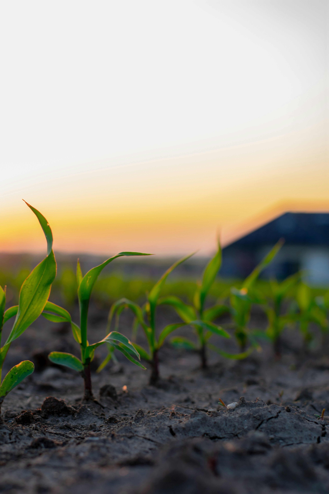
STAGE 01
Emergence
Seedlings emerge 5–7 days after sowing. Ensure soil moisture.

STAGE 02
Vegetative
Rapid leaf development. Apply nitrogen at 6–8 leaf stage.
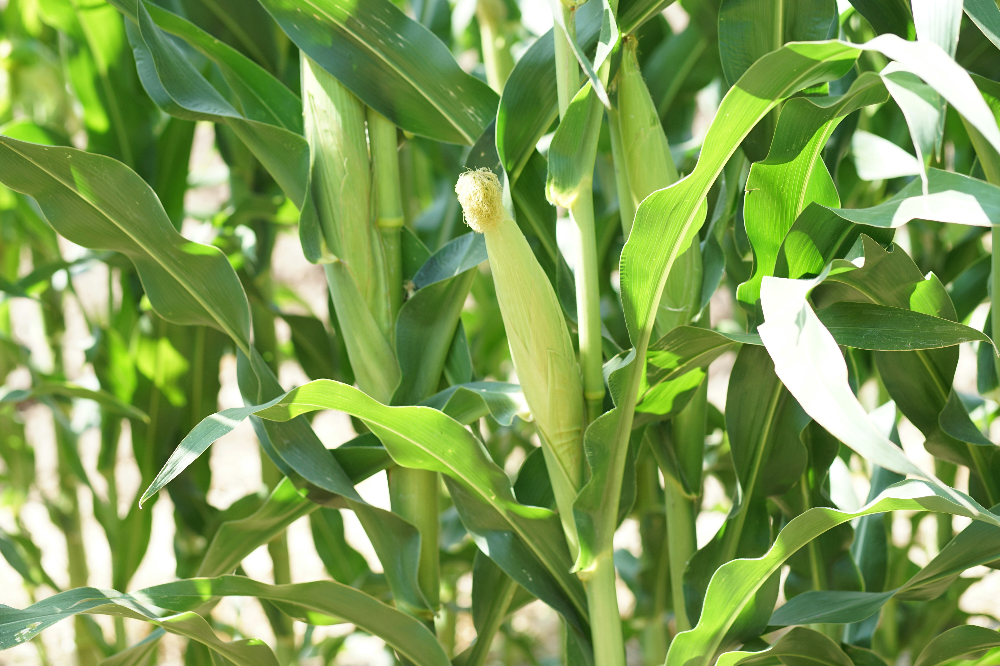
STAGE 03
Silking
Tassels and silks appear. Critical pollination window — avoid drought.
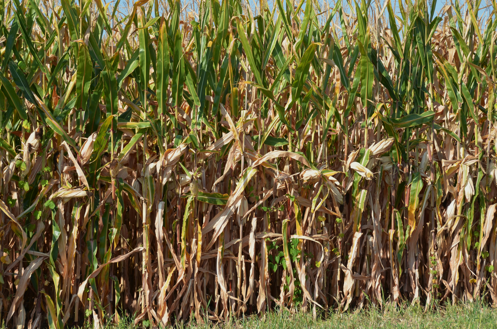
STAGE 04
Maturity
Husks dry and grain dents. Harvest when husks turn brown.
Planting Method
1
Plow soil to 25 cm and add organic matter before sowing.
2
Sow 2 seeds per hill, 25×70 cm spacing, depth 4–5 cm. Rate: 8–10 kg/feddan.
3
Apply phosphate fertilizer at planting and urea in 2–3 splits.
4
Irrigate every 10–12 days. Critical to avoid drought at silking stage.
5
Thin to 1 plant per hill at 3-leaf stage. Remove weak plants.
Expert Tips
Maize needs 25–33°C for optimal growth. Temperatures above 35°C reduce yield.
Fall armyworm is the main threat. Monitor leaves and apply insecticide early.
Use hybrid varieties (single-cross or three-way cross) for 20–30% higher yield.
Drip irrigation saves 35% water and boosts yield by up to 25% vs. flood.
Rotate with wheat or fava beans to break pest cycles and improve soil fertility.
Key Facts
90–110
Days to Harvest
7–9
Irrigations
25–33°C
Ideal Temp
3.40 T
Avg Yield/Feddan
🌸
Cotton
Gossypium barbadense
Summer Crop
Delta / Upper Egypt
Egyptian Long-Staple
Growth Stages
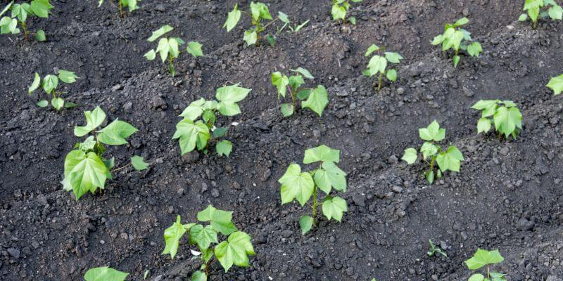
STAGE 01
Emergence
Seedlings emerge 7–10 days after sowing. Ensure soil temp above 18°C.

STAGE 02
Squaring
First flower buds (squares) appear. Apply phosphate and nitrogen.
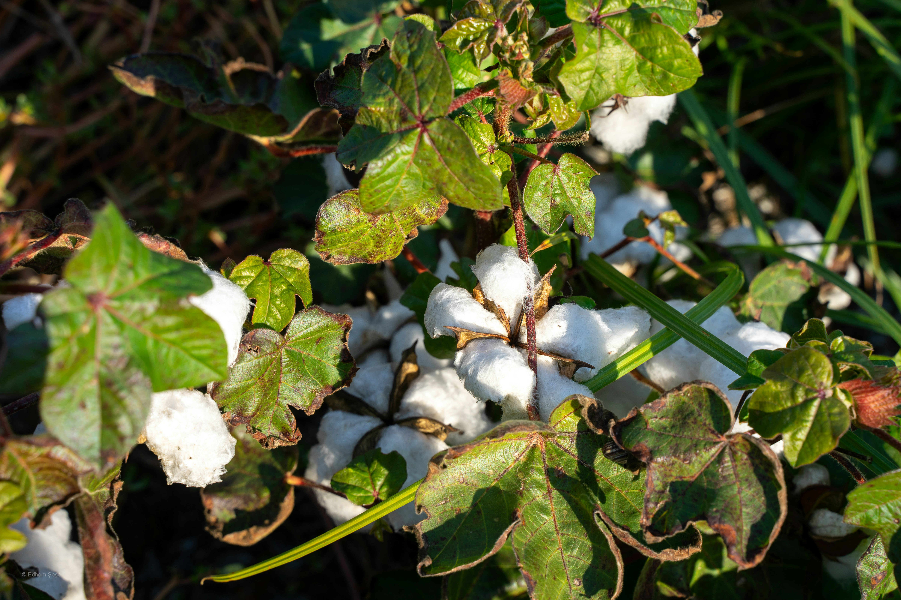
STAGE 03
Boll Formation
Flowers bloom and bolls develop. Protect from bollworm and aphids.
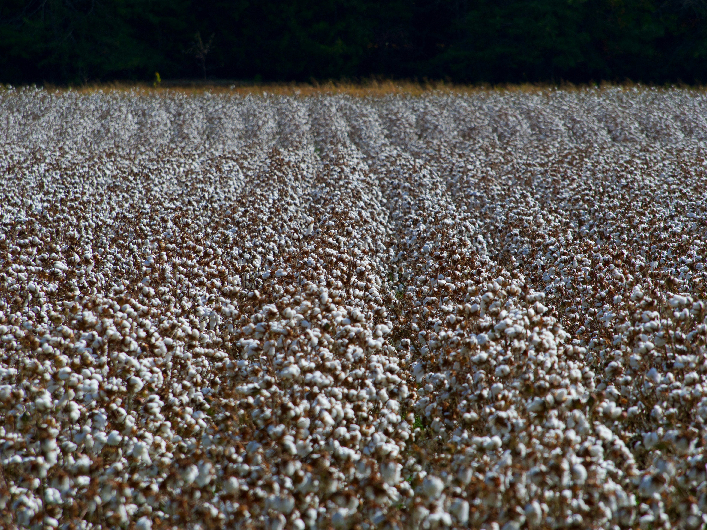
STAGE 04
Harvest
Bolls open and fiber fluffs. Hand-pick Sept–November for quality.
Planting Method
1
Prepare ridges 60–70 cm apart. Sow 3 seeds per hill, 25–30 cm apart.
2
Sowing rate: 8–10 kg/feddan. Depth: 3–4 cm. Sow March–April.
3
Thin to 1–2 plants per hill at first true leaf stage.
4
Apply NPK in 3 stages: planting, first square, and boll formation.
5
Irrigate every 15–18 days. Stop irrigation 3 weeks before harvest.
Expert Tips
Remove top of plant (topping) at 100 cm height to concentrate energy in bolls.
Pink bollworm is the main pest. Use pheromone traps and spray on schedule.
Egyptian Giza cotton (extra-long staple) commands premium world market prices.
Hand-pick carefully in 3–4 rounds to maintain fiber quality and avoid contamination.
Rotate with wheat or clover — never follow with cotton again for 2 years minimum.
Key Facts
180–200
Days to Harvest
8–10
Irrigations
28–35°C
Ideal Temp
0.78 T
Avg Yield/Feddan
🎋
Sugarcane
Saccharum officinarum
Year-Round Crop
Upper Egypt Only
Sugar Industry
Growth Stages
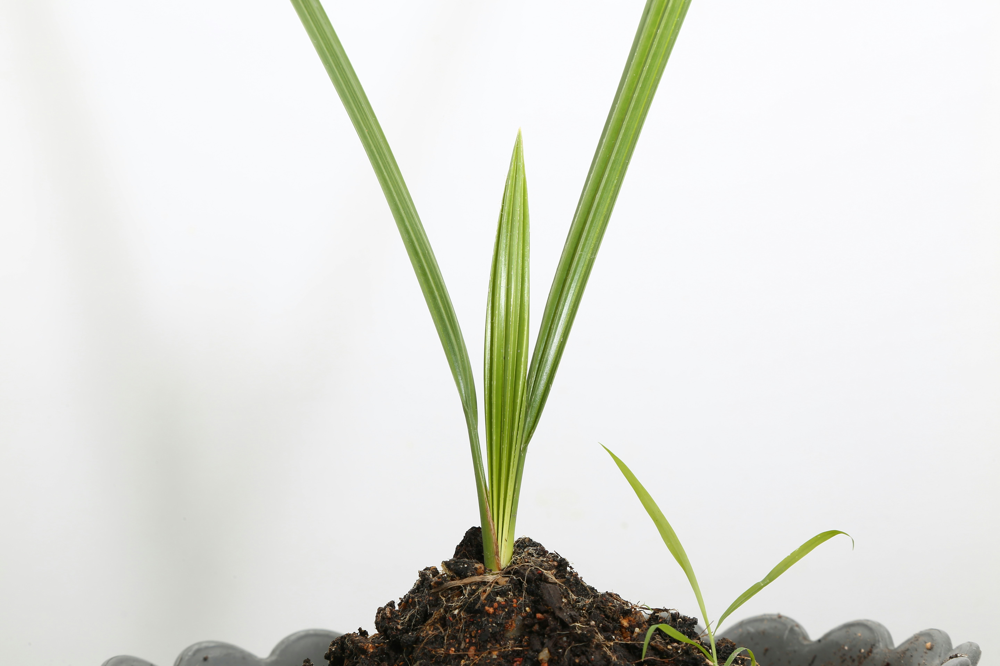
STAGE 01
Sprouting
Setts (cuttings) sprout within 2–3 weeks. Keep soil moist.
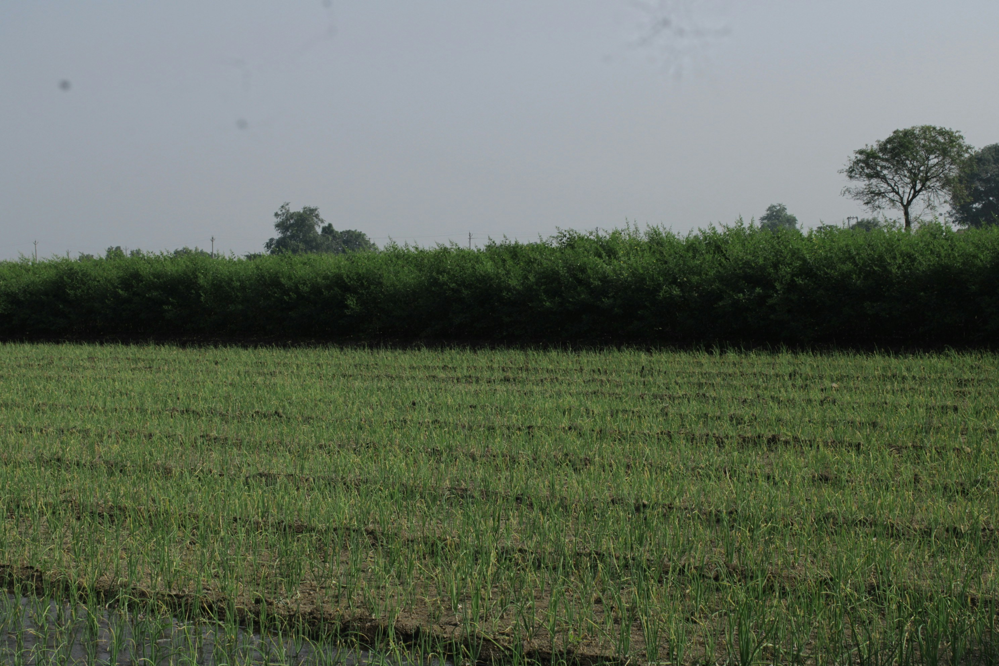
STAGE 02
Tillering
Multiple shoots develop. Apply heavy nitrogen fertilization.
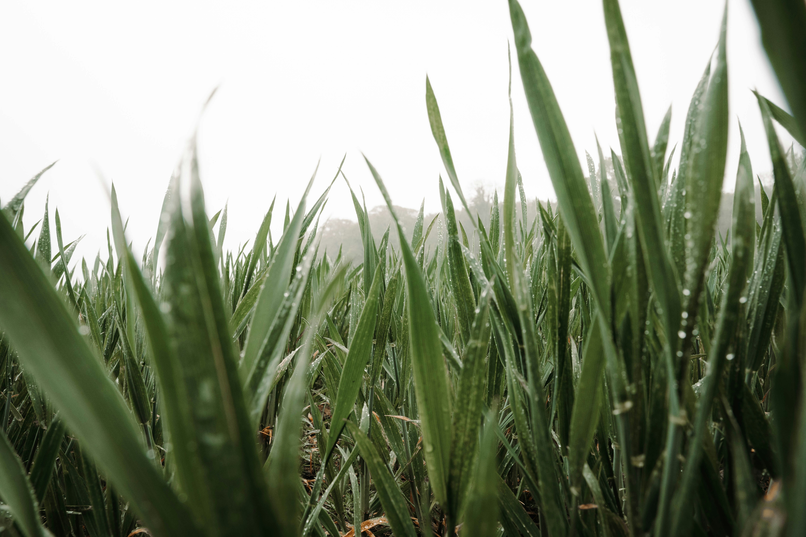
STAGE 03
Grand Growth
Rapid elongation phase. Can grow 30 cm/week. High water demand.

STAGE 04
Maturity
Sugar accumulates as growth slows. Harvest 10–12 months after planting.
Planting Method
1
Prepare furrows 120–140 cm apart and 20–25 cm deep.
2
Place setts (2-bud cuttings) end-to-end in furrows. Cover with 5 cm soil.
3
Apply heavy basal fertilization: 40 kg P + 30 kg K per feddan at planting.
4
Irrigate immediately after planting, then every 10–15 days in summer.
5
Allow ratoon (regrowth) for 2–3 seasons to reduce replanting costs.
Expert Tips
Sugarcane needs sustained heat above 30°C — Upper Egypt's climate is uniquely suited.
Drip irrigation reduces water use by 40% and increases sugar content significantly.
Burn or remove dry leaves (trashing) to reduce pest habitat and ease harvest.
Harvest in December–March when sugar content peaks and temperatures are cooler.
Deliver to factory within 24 hours of cutting to prevent sugar inversion losses.
Key Facts
10–12
Months to Harvest
20–25
Irrigations
30–38°C
Ideal Temp
47 T
Avg Yield/Feddan
🍅
Tomato
Solanum lycopersicum
3 Seasons
All Regions
High Value Crop
Growth Stages

STAGE 01
Transplanting
Seedlings transplanted at 25–30 days. Space 50×100 cm.

STAGE 02
Flowering
Yellow flowers appear 35–40 days after transplanting. Ensure pollination.

STAGE 03
Fruit Set
Small green tomatoes form. Apply potassium to improve fruit quality.

STAGE 04
Harvest
Harvest when 60–70% colored. Multiple picks over 4–6 weeks.
Planting Method
1
Start seeds in nursery trays. Transplant at 4–6 true leaf stage.
2
Prepare beds with compost. Plant 50 cm between plants, 100 cm rows.
3
Install drip irrigation before planting for water and fertilizer efficiency.
4
Apply fertigation: nitrogen-heavy early, potassium-heavy at fruit fill stage.
5
Stake plants and prune to 1–2 main stems for better air circulation.
Expert Tips
Ideal fruit set: 18–24°C night / 25–30°C day. Above 35°C causes flower drop.
Use certified disease-free seed and rotate with non-solanaceous crops every season.
Irregular irrigation causes blossom-end rot and fruit cracking. Keep consistent moisture.
For processing tomatoes, machine harvest when 95% red. For fresh market, hand-pick.
Remove suckers (side shoots) weekly to direct energy into fewer, larger fruits.
Key Facts
75–90
Days to Harvest
Drip
Best Irrigation
20–28°C
Ideal Temp
11.5 T
Avg Yield/Feddan
🥔
Potato
Solanum tuberosum
Winter / Nile Crop
Delta / North Coast
Export Crop
Growth Stages
STAGE 01
Sprouting
Seed tubers sprout 10–15 days after planting. Cool soil required.
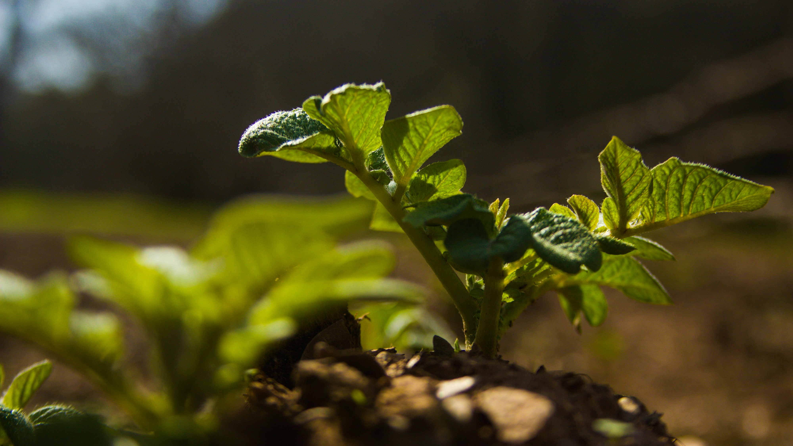
STAGE 02
Vegetative
Canopy develops rapidly. Stolons begin forming underground.
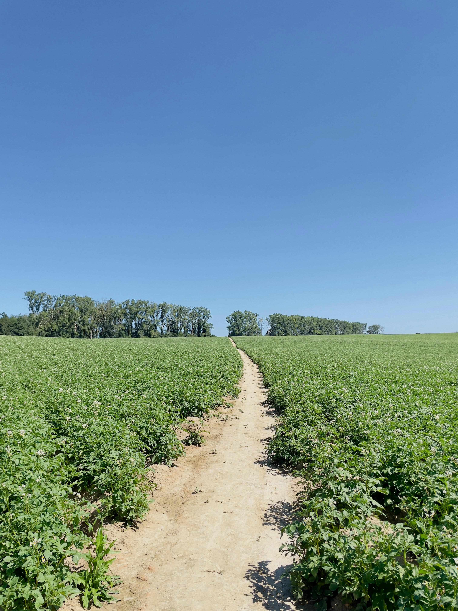
STAGE 03
Tuber Fill
Tubers swell rapidly. Adequate potassium ensures size and starch.

STAGE 04
Harvest
Vine dies back naturally. Harvest 90–110 days after planting.
Planting Method
1
Use certified seed tubers (30–60 g each). Cut large tubers with a clean blade.
2
Plant in ridges 70–75 cm apart, 25–30 cm between tubers, depth 10–12 cm.
3
Apply 200 kg/feddan compound fertilizer (12-12-17) at planting.
4
Irrigate every 8–10 days using drip or sprinkler. Avoid over-irrigation.
5
Earth up (hill) soil around plants when 20 cm tall to prevent greening of tubers.
Expert Tips
Optimal tuber formation at 15–18°C soil temperature. Avoid heat above 25°C.
Late blight is the most destructive disease. Apply fungicide preventively in humid weather.
Egyptian potatoes are highly valued in Gulf and EU export markets — maintain quality.
Use imported certified Dutch or Scottish seed for first crop. Local seed for second.
Cure harvested tubers at 15°C for 2 weeks before storage to heal skin wounds.
Key Facts
90–110
Days to Harvest
8–12
Irrigations
15–20°C
Ideal Temp
8.50 T
Avg Yield/Feddan
🫘
Fava Beans
Vicia faba
Winter Crop
All Regions
Nitrogen Fixer
Growth Stages
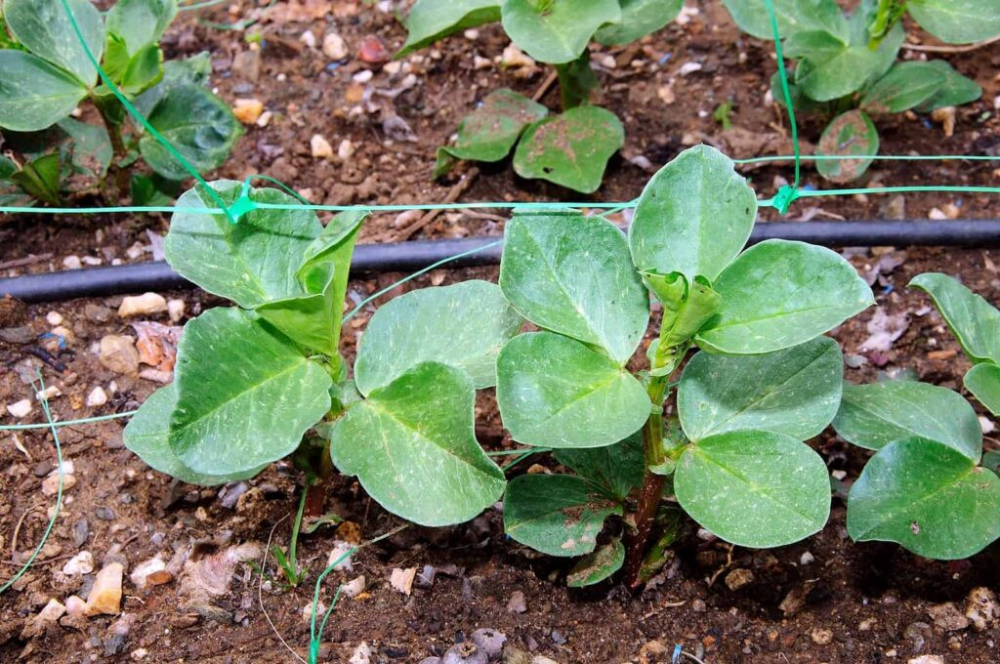
STAGE 01
Germination
Seeds germinate 7–10 days after sowing in cool, moist soil.
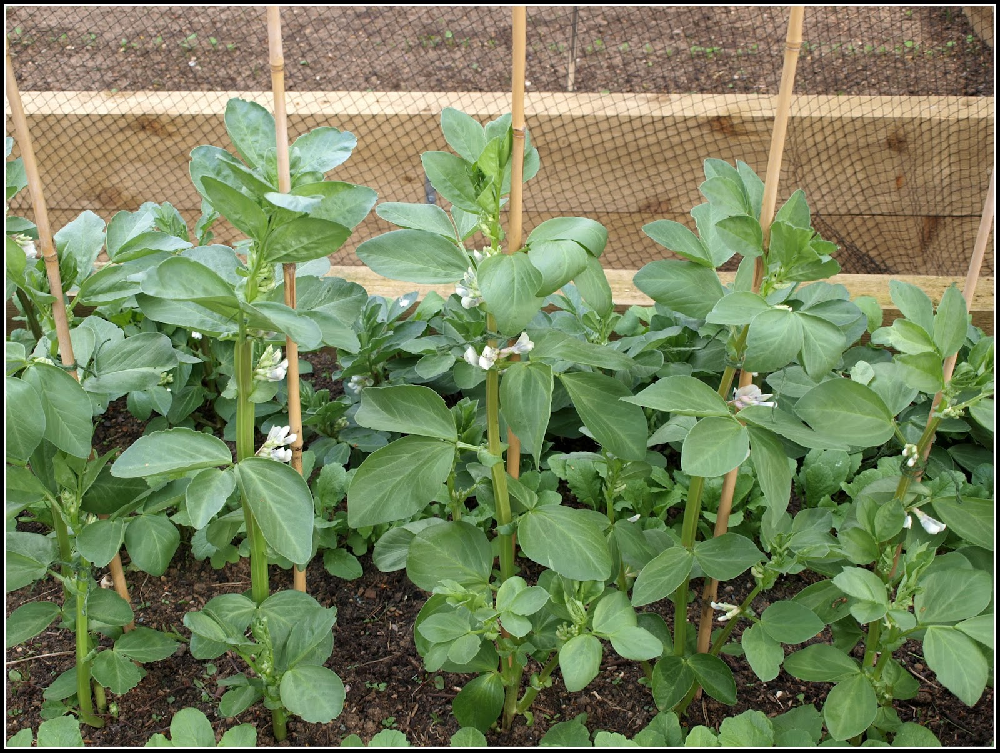
STAGE 02
Vegetative
Leaves develop and nitrogen-fixing nodules form on roots.
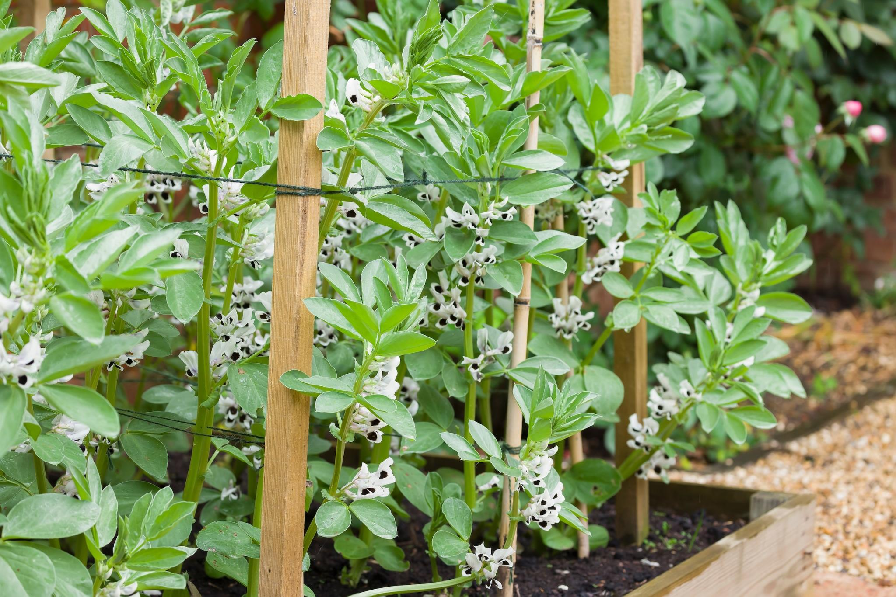
STAGE 03
Flowering
White-black flowers bloom. Bees essential for good pollination.
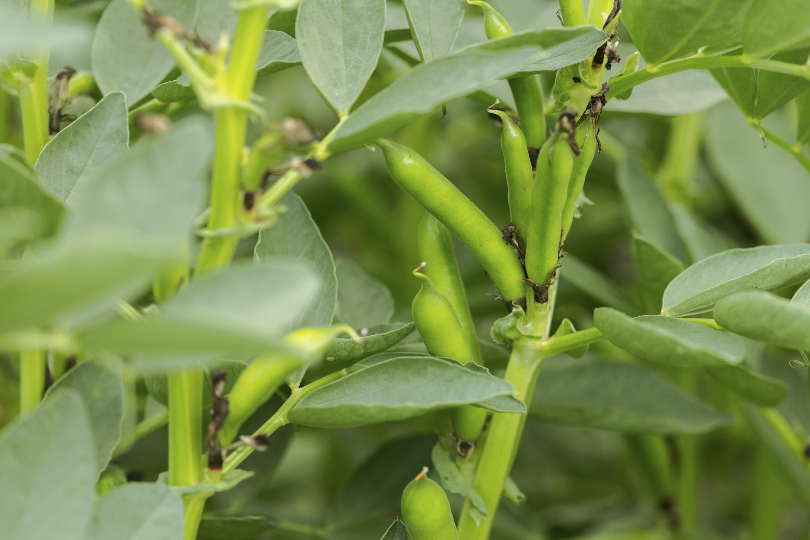
STAGE 04
Harvest
Pods blacken and dry. Harvest March–April when fully mature.
Planting Method
1
Inoculate seeds with Rhizobium bacteria before sowing to enhance nitrogen fixation.
2
Sow 50–60 kg/feddan broadcast or in rows 25–30 cm apart, depth 6–8 cm.
3
Apply only phosphate and potassium — no nitrogen needed (fixed from air).
4
Irrigate every 15–20 days (4–5 irrigations total). Avoid waterlogging.
5
Harvest when 90% of pods are black and dry. Leave 5 days for field drying.
Expert Tips
Best germination at 5–10°C. Frost during flowering reduces yield significantly.
Place beehives near the field during flowering to maximize pollination by up to 40%.
Fava beans improve soil fertility — rotate before wheat or maize for free nitrogen benefit.
Aphids (black bean aphid) are the main pest. Spray insecticidal soap at first infestation.
Egyptian ful medames (fava beans) is a national staple — local demand is always strong.
Key Facts
140–160
Days to Harvest
4–5
Irrigations
8–15°C
Ideal Temp
0.88 T
Avg Yield/Feddan